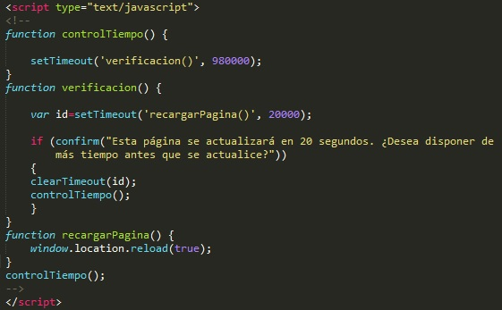
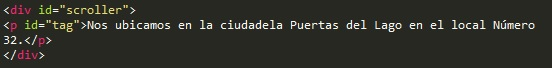
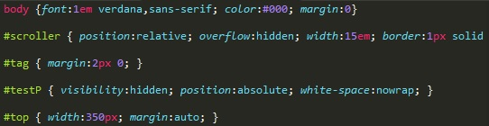
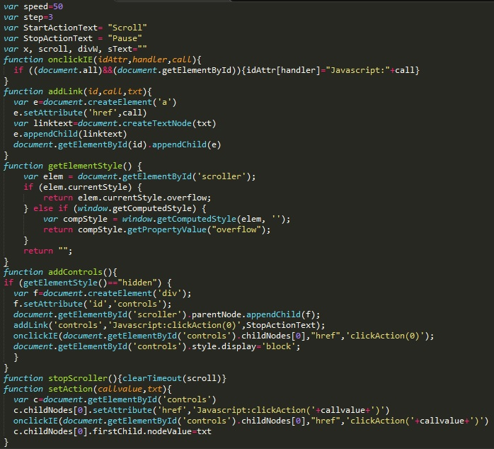
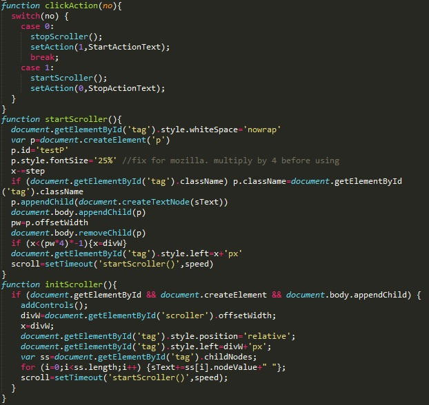
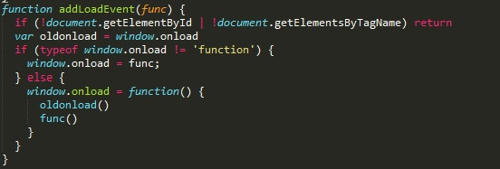

Pauta 2.2 Tiempo suficiente
Proporcionarr a los usuarios el tiempo suficiente para leer y usar el contenido.
Los componentes de la interfaz de usuario y la navegación deben ser operables.
Proporcionarr a los usuarios el tiempo suficiente para leer y usar el contenido.
Para cada límite de tiempo impuesto por el contenido, se cumple al menos uno de los siguientes casos:
Apagar: El usuario puede detener el límite de tiempo antes de alcanzar el límite de tiempo.
Ajustar: El usuario puede ajustar el límite de tiempo antes de alcanzar dicho límite en un rango amplio que es, al menos, diez veces mayor al tiempo fijado originalmente.
Extender: Se advierte al usuario antes de que el tiempo expirte u se le conceden al menos 20 segundos para extender el límite temporal con una acción simple y el usuario puede extender ese límite de tiempo al menos diez veces.
Excepción de tiempo real: El límite de tiempo es un requisito que forma parte de un evento en tiempo real y no resulta posible ofrecer una alternativaal límite de tiempo.
Excepción por ser esencial: El límite de tiempo es esencial y si se extendiera, invalidaría la actividad.
Excepción de 20 horas: El límite de tiempo es mayor a 20 horas.
Una página de cotizaciones bursátiles utiliza la escritura para actualizar la página cada 10 minutos con el fin de garantizar siguen estando disponibles las últimas estadísticas. 20 segundos antes de que expire el período de cinco minutos, un diálogo de confirmación que le pregunta si el usuario necesita más tiempo antes de que se actualice la página. Esto permite que el usuario sea consciente de la inminente actualización y para evitar que si se desea. 
Para la información que tiene movimiento, parpadeo, se desplazará o sea actualiza automáticamente, se cumplen todos los casos siguientes.
Movimiento, parpadeo, desplazamiento: Para toda información que se mueve, parpadeo o se desplaza, que comienza automáticamente, dura más de 5 segundos y se presenta en paralelo con otro contenido, existe un mecanismo para que el usuario la pueda poner en pausa, detener u ocultar, a menos que el movimiento, parpadeo o desplazamiento sea parte esencial de una actividad
Actualización automática: Para toda la información que se actualiza automáticamente, que se inicia automáticamente y se presenta en paralelo con otro contenido, existe un mecanismo para que el usuario la pueda poner en pausa, detener u ocultar, o controlar la frecuencia deactualización a menos que la actualización automática sea parte esencial de una actividad.
Un clip de video genera un efecto de parpadeo, que pasado 5 segundos, el efecto se detiene automáticamente.
Un mensaje con la descripción "Nos ubicamos en la ciudadela Puertas del Lago en el local Número 32." es presentado de manera que el texto se desplaza a una determinada velocidad y además en la parte inferior posee la opción de pausar el movimiento del texxto y de reanudarlo.
Código HTML
Código CSS
JavaScript
  